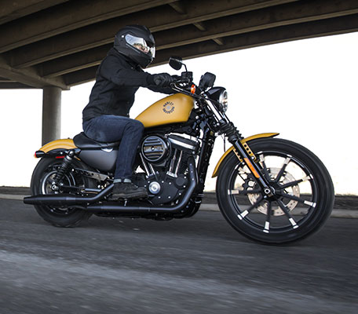

Мотоциклы 2019
|
Он создан специально для бетонных джунглей современного города. Двигатель Revolution X® с жидкостным охлаждением, внушающие доверие тормоза с антиблокировочной системой, маневренное шасси и специальным образом настроенная подвеска — у Harley-Davidson Street® 750 есть всё необходимое, чтобы город пал к вашим ногам. Совершенно новый медальон на баке и двухцветное лакокрасочное покрытие хорошо дополняют серебристое оребрение цилиндра и полосы на колёсах. Но настоящее веселье начинается, когда загорается зелёный сигнал светофора.
Стоит очень много американских денег
Производитель: Harley-Davidson|  |
|
Удобство управления – это сильная сторона Superlow® и его важное преимущество перед другими моделями. Свое название мотоцикл получил за низкое седло и низкий центр тяжести. Благодаря этому вы находитесь ближе к дороге, вам проще держать равновесие и вы чувствуете себя в седле более уверенно. Поскольку управлять мотоциклом очень удобно, вы не устанете, даже если проведете за рулем целый день. Настройте заднюю подвеску, дайте волю двигателю 883 Evolution®, и пусть день пролетает километр за километром.
Стоит очень много американских денег
Производитель: Harley-Davidson
|
Street Bob® – это мотоцикл, в котором нет ничего лишнего и на котором хорошо ездить, выставив руки навстречу ветру. Черная отделка, колеса со спицами, цифровая приборная панель скрытого типа, педали и подножки переднего расположения и укороченные крылья. Двигатель Milwaukee-Eight® 107 (1745 см3) имеет достаточную мощь, чтобы пейзаж в ваших зеркалах стремительно удалялся. В нем есть все, что вам нужно, и ничего более. Доступная цена этого мотоцикла делает его еще более привлекательным.
Стоит очень много американских денег
Производитель: Harley-Davidson
|
Road King® Classic – это модель, в которой ностальгический стиль встречается с выдающимися характеристиками и универсальностью современного турера Harley-Davidson®. Фара Hiawatha появилась еще в 1960-е, когда хром правил улицами. Однако мощь двигателя Milwaukee-Eight® 107 (1745 см3) делает этот мотоцикл очень актуальным и в наши дни. Вилка Showa® Dual Bending Valve и эмульсионные задние амортизаторы с ручной регулировкой преднатяга позволяют вам настроить плавность хода в соответствии со своими предпочтениями. Это – симбиоз неувядающей классики и новейших технологий.
Стоит очень много американских денег
Производитель: Harley-Davidson
|
С новым Tri Glide® Ultra поездки в этом сезоне станут еще увлекательнее. Ведь сейчас вы будете чувствовать себя еще увереннее благодаря совершенно новой противобуксовочной системе. Она перераспределяет крутящий момент между задними колесами, улучшая управляемость мотоцикла. Вы также получаете мощный двигатель Milwaukee-Eight® 114 (1868 см3), тормоза Reflex™ Linked с ABS, совершенно новую информационно-развлекательную систему BOOM!™ GTS с 4 динамиками, электронный круиз-контроль и багажное отделение вместимостью 192 литра. У вас будет достаточно места, чтобы разместить все вещи, которые потребуются вам в увлекательной дальней поездке.
Стоит очень много американских денег
Производитель: Harley-Davidson
|
Есть хорошие мотоциклы, а есть мотоциклы, которые лучше всех. Когда речь заходит о кастомных турерах, то CVO™ Street Glide® – это их кульминация. Вы получаете мощный двигатель Milwaukee-Eight® 117 (1923 см3) V-Twin, красные крышки коромысел, премиальные колеса Talon, кастомные органы управления и совершенно новую информационно-развлекательную система BOOM!™ Box GTS с тремя отдельными усилителями мощностью 75 Вт на канал и общей мощностью 900 Вт. Комплект беспроводных гарнитур Bluetooth® позволяет вам пользоваться информационно-развлекательной системой и общаться со своим пассажиром и другими райдерами. В комплект входят рукоятки с подогревом. Мы против компромиссов и срезания углов. Действуя в традициях CVO, мы корпеем над каждой деталью, обрабатывая ее, как алмаз. И все это потому, что некоторые хотят большего.
Стоит очень много американских денег
Производитель: Harley-Davidson| Street | Sportser | Softail | Touring | Trike | CVO | |
|---|---|---|---|---|---|---|
| max Скорость | ||||||
| Мощность | ||||||
| Охлаждение | ||||||
| Масса | ||||||
| Подвеска | ||||||
| Тормоза | ||||||
| Рама | ||||||
| Зажигание | ||||||
| КПП, сцепление, привод | ||||||
| Топливная система |